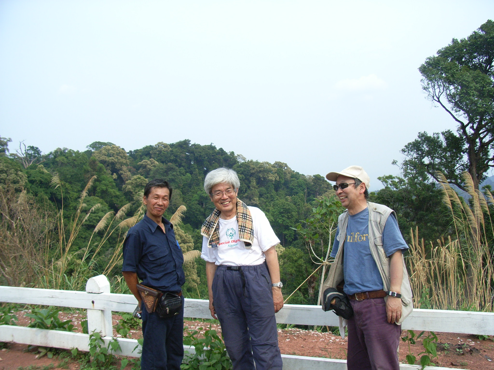
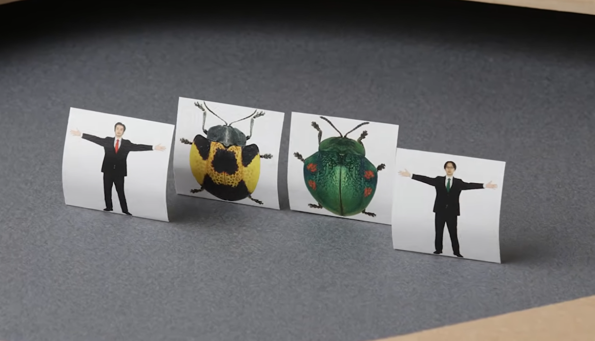
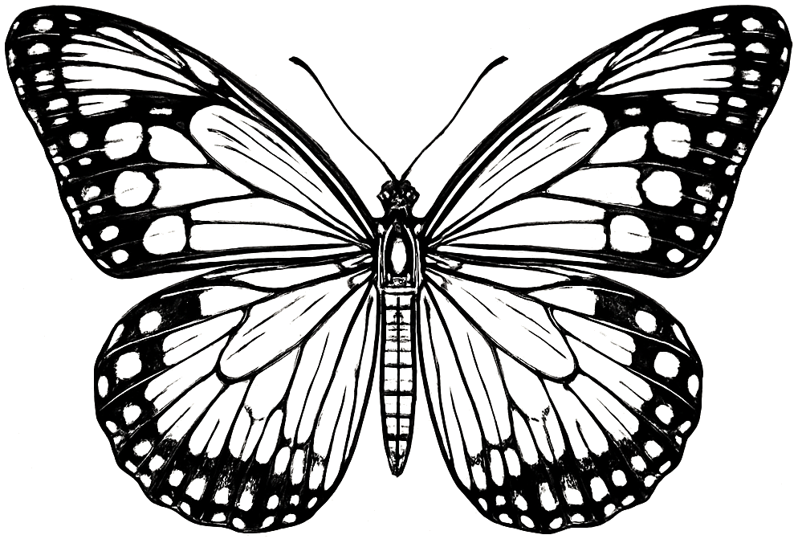

レ ポ ー ト
「虫ってさ、80年見てても飽きないね」
─ 養老孟司＆小檜山賢二が語る ●終了
2026年4月4日（土）14:00〜15:30 ／ 東京都写真美術館1階ホール ／ 司会：足立真穂
養老さんの「展示については、とにかく見てからです」という挨拶にはじまり、小檜山さんが「なぜこんな写真を撮ることになったのか」をスライドとともに解説していった。会場からの質問にも丁寧に答えていく。
事前に寄せてもらった中でいちばん多かった質問は、なんと「変身したい虫はいるでしょうか？ その理由は？」というもの。お返事は以下の通り。
養老孟司 ＝ アサギマダラ。理由：「遠くまで飛べるから」。
小檜山賢二 ＝ ハンミョウ。理由：「きれいだし、飛べるから」。
お二人とも、どこかへ飛んでいきたい様子であった（笑）。本日のギャラリートーク登壇者・片田陽依氏、桃山鈴子氏の答えは、ぜひ会場でお確かめいただきたい。
なお、4月4日のトークの様子は、本日のアンバサダー・片田陽依さんを迎えた動画として公開された（一面〈片田陽依さん、虫展アンバサダー就任〉欄〈新着ピックアップ〉参照）。
レ ポ ー ト
「虫を知ると毎日が面白くなる」
─ 池田清彦先生、虫展を語る ●終了
2026年4月24日（金）18:45〜19:45 ／ 東京都写真美術館1階ホール ／ 司会：足立真穂
本紙創刊号発行に先立つ2026年4月24日には、養老孟司の〈虫採りともだちナンバーワン〉、生物学者・池田清彦先生が登壇された。

2007年、ラオスにて──養老（中央）と池田（左）。〈虫採りともだちナンバーワン〉のはじめての地。写真提供：足立真穂
前半は、池田が選んだ小檜山写真５点（ロクロクビオトシブミ、ハリネズムトゲハムシ、フゾロイヒラタハムシ、アシナガメクラチビゴミムシ、アオマイマイカブリ）の虫豆知識と解説。「この虫はどんなところで暮らしているか」を聞くと写真の見え方が変わっていく。虫を知ると世界を見る目が変わる、毎日が面白いものになる──イベントのタイトル通りだ。
後半はラオスでの虫採り回顧。足立は「養老先生は『虫採りをするなら池田君だよ』とおっしゃる」と紹介。象のそばで虫を採ったタイの話、10メートルの虫採り網のこと（展示会場に写真あり）、変人だと思った虫屋さんの話──会場は終始笑いに包まれた。
池田先生のメルマガ「池田清彦のやせ我慢日記」（月２回・月440円・初回無料）は養老先生も愛読する面白さだ。当日に配信された第310回は虫展特集に。同日発売の最新刊『人はなぜ働かなくていいのか』や養老先生との共著『年寄りは本気だ』の話題にもなった。
PROFILE 池田清彦（いけだ・きよひこ） 1947年東京生まれ。生物学者。早稲田大学・山梨大学名誉教授。100冊以上の著書。フジテレビ「ホンマでっか!?TV」等に出演。
テーマソング「むしのいどころ」
作・歌：すてぃぎもろく ／ 映像：岡崎智弘

MV「むしのいどころ」より。映像：岡崎智弘
養老昆虫クラブには、テーマソングがある。タイトルは「むしのいどころ」。〈世界を揺るがす三人組バンド〉すてぃぎもろくが、虫展のために書き下ろした一曲（2026年3月18日リリース）。
ミュージックビデオは、虫展のアートディレクターでもある岡崎智弘が制作。小檜山賢二の作品写真などをコマ撮りし、虫たちと人物が画面の中で踊り出す映像となっており、養老先生が山梨で養老昆虫メンバーと虫採りをする様子も。
曲を聞いた養老先生は「外に飛び出したくなるのがいい」と一言。歌のなかで、虫たちの〈居所〉と、わたしたちの〈心の居所〉が、ふっと重なる瞬間がある。会場帰りの電車のなかで、ぜひイヤホンを挿していただきたい。
LISTEN
むしのいどころ
MV (YouTube)
youtube.com/watch?v=HoRqKxLJFAo
すてぃぎもろく公式：www.stygimoloch.com／Music・Schedule・Video・Goods・News・Podcast 配信中
編集後記
創刊号は、虫展のニュースを伝え、編集同人・柳瀬博一さんの基金プロジェクトを特集の柱に据えた。虫展のテーマである「身近な自然の答え」が、横浜のすずかけ池でも進行中だと知ったのは、編集部にとって大きな発見だった。
──ところで本紙、実はAI編集者「エディ」と、発行人・平野（メディアクリエイター／生成AIの専門家）が開発中の編集システムを使って組まれている。編集人となった足立真穂から「養老先生のメディアをなにかつくろう」と依頼があったのは3月はじめのこと。編集会議3回目には、編集同人となった柳瀬博一も加わり、会場で情報を伝えるにはどうしたらいいのかという課題があがった。この情報伝達方法の模索は、いつのまにか養老昆虫クラブの連絡メールと合体していき、会場での新聞配布となった。創刊号として駆け足での編集となり、デザインレイアウトの粗さはご容赦いただきたい。素材から構造へ、構造から原稿へ、原稿から紙面へ。一冊の本も一枚の新聞も、同じ編集の流れで作れる仕組みだ。「編集会議の大切さがわかった」とは足立の弁だ。当たり前だが、こちらの脳みそ以上のものは出てこない。本紙はその試運転であり、いつか近い将来にはこの新しい「編集」のかたちを伝える日がくるだろう。
個人的な話をひとつ。編集者として養老先生のラオス取材に同行したことがある。虫採りに夢中になる先生方の、子どものような笑顔は今も忘れられない。あの軽やかな空気が、本紙のどこかに残っていればと願う。
「面白そうなことは、まずやってしまう」──それが養老昆虫クラブの編集姿勢である。読者諸氏の感想・寄稿、心よりお待ちしております。
（発行人・平野友康）
